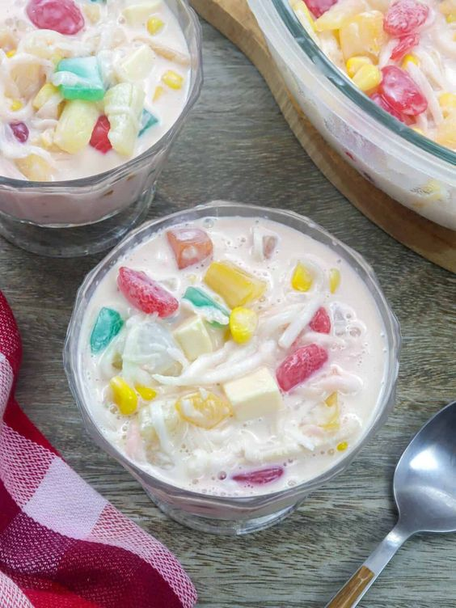

HALO-HALO

INGREDIENTS:
- Ingredient 1 ▢crushed or shaved ice
- Ingredient 2 ▢milk (fresh or evaporated)
- Ingredient 3 ▢sugar, if needed
- Ingredient 4 ▢sweetened saba or plantain bananas
- Ingredient 5 ▢fresh or sweetened langka (jack fruit)
- Ingredient 6 ▢sweetened sweet potatoes
- Ingredient 7 ▢sweetened garbanzos or beans
- Ingredient 8 ▢coconut strips or sweetened macapuno
- Ingredient 9 ▢sweetened red munggo
- Ingredient 10 ▢nata de coco (coconut gel)
- Ingredient 11 ▢sago or tapioca pearls or jelly cut into cubes pinipig
- Ingredient 12 ▢leche flan (topping)
- Ingredient 13 ▢ube jam or ube ice cream (topping)
INSTRUCTIONS:
- Step 1 In a tall glass, add a teaspoon of each of your selected ingredients.
- Step 2 Add sugar if you like.
- Step 3 Fill the glass with shaved ice up to the brim.
- Step 4 Drizzle with milk.
- Step 5 Add the toppings of choice.
- Step 6 Serve with a long spoon to mix ('halo') and enjoy.
BUKO SALAD

INGREDIENTS:
- Ingredient 1 ▢4 cups young coconut buko, shredded
- Ingredient 2 ▢6 ounces sugar palm fruit kaong, drained
- Ingredient 3 ▢12 ounces coconut gel nata de coco, drained
- Ingredient 4 ▢2 cans 15 ounces each fruit cocktail, drained
- Ingredient 5 ▢8 ounces pineapple chunks drained
- Ingredient 6 ▢1 14 ounce can sweetened condensed milk
- Ingredient 7 ▢7 ounces table cream
INSTRUCTIONS:
- Step 1 In a mixing bowl, combine young coconut, kaong, nata de coco,
- Step 2 pineapple chunks, and fruit cocktail.
- Step 3 Gently stir to distribute the ingredients.
- Step 4 Add sweetened condensed milk and table cream.
- Step 5 Mix until all the ingredients are properly distributed.
- Step 6 Refrigerate for at least 4 hours or place in the freezer for 1 hour.
- Step 7 Transfer to a serving bowl.Serve for dessert.Share and enjoy!
LECHE FLAN

INGREDIENTS:
- Ingredient 1▢10 pieces eggs
- Ingredient 2▢1 can condensed milk (14 oz)
- Ingredient 3▢1 cup fresh milk or evaporated milk
- Ingredient 4▢1 cup granulated sugar
- Ingredient 5▢1 cup granulated sugar
INSTRUCTIONS:
- Step 1 Using all the eggs, separate the yolk from the egg white (only egg yolks will be used).
- Step 2 Place the egg yolks in a big bowl then beat them using a fork or an egg beater
- Step 3 Add the condensed milk and mix thoroughly
- Step 4 Put the mold (llanera) on top of the stove and heat using low fire
- Step 5 Put-in the granulated sugar on the mold and mix
- Step 6 thoroughly until the solid sugar turns into liquid (caramel) having a light brown color.
- Step 7 Note: Sometimes it is hard to find a Llanera
- (Traditional flan mold) depending on your location.
- Step 8 I find it more convenient to use individual Round Pans in making leche flan.
- Step 9 Spread the caramel (liquid sugar) evenly on the flat side of the mold Wait for 5 minutes
- Step 10 pour the egg yolk and milk mixture on the mold
- Step 11 Cover the top of the mold using an Aluminum foil
- Step 12 Steam the mold with egg and milk mixture for 30 to 35 minutes
- Step 13 After steaming, let the temperature cool down then refrigerate
- Step 14 Serve for dessert. Share and Enjoy!
SUMAN
INGREDIENTS:
- Ingredient 1 ▢2 cups Glutinous rice (Malagkit)
- Ingredient 2 ▢1 tsp. salt
- Ingredient 3 ▢2 cups fresh or 1 canned coconut milk (400 ml
- Ingredient 4 ▢ banana leaves for wrapping
- Ingredient 5 ▢ water for boiling
- Ingredient 6 ▢1 cup sugar (brown or white
- Ingredient 7 ▢ If you are making latik (caramelized coconut cream)
- Ingredient 8 ▢1 can coconut milk
- Ingredient 9 ▢1 cup brown sugar
- Ingredient 10 ▢1/2 tsp. salt
INSTRUCTIONS:
- Step 1 Soak the glutinous rice (malagkit) in water for 2 to 3 hrs and then drain well
- Step 2 Meanwhile, prepare banana leaves by cutting it into 10 by 10 (inches) sheets and trim stiff ends.
- Step 3 Briefly pass the leaves over flames for 10 to 20 seconds.
- Step 4 Set aside.In a pot, mix coconut milk, salt, and sugar on medium heat and stir well.
- Step 5 Add glutinous rice and cook for 15 minutes. Stir occasionally until liquid is absorbed.
- Step 6 Remove from heat and allow to cool. Put 2 tablespoons on banana leaf.
- Step 7 Roll leaves tightly. Leave 1 inch on top and bottom side. Fold edges to seal and tie with a string.
- Step 8 In a steamer, stack the suman and steam for around 30 minutes to one hour over boiling water.
- Step 9 Make sure they are tender before removing them from the steamer.
- Step 10 Allow it to cool before unwrapping so that it will firm up.
- Step 11 Serve with sugar, sweetened grated coconut, latik or ripe mango. Share & enjoy!
- Step 12 If you are making latik (caramelized coconut cream)
- Step 13 In a pan, mix coconut milk, brown sugar and salt.
- Step 14 Stir well and cook on medium heat and bring to a boil until well mixed.
- Step 15 Turn of heat and serve.
MAJA BLANCA
INGREDIENTS:
- Ingredient 1 ▢4 cups coconut milk
- Ingredient 2 ▢3/4 cup cornstarch
- Ingredient 3 ▢14 ounces condensed milk
- Ingredient 4 ▢3/4 cup fresh milk
- Ingredient 5 ▢3/4 cup granulated sugar
- Ingredient 6 ▢15 ounces whole sweet kernel corn
- Ingredient 7 ▢5 tbsp toasted grated coconut
INSTRUCTIONS:
- Step 1 Pour the coconut milk in a cooking pot and bring to a boil.
- Step 2 Add the sugar, condensed milk, and whole sweet kernel corn then stir
- Step 3 until all the ingredients are evenly distributed.Simmer for 8 minutes
- Step 4 Combine the milk and cornstarch then whisk until the cornstarch is diluted
- Step 5 Pour the fresh milk and cornstarch mixture in the cooking pot and stir thoroughly.
- Step 6 Allow to cook while stirring until the mixture reaches your desired thickness
- Step 7 Pour the mixture in a serving tray then arrange
- Step 8 flatten the top using a flat tool such as a wooden spatula
- Step 9 Allow to cool down then refrigerate for at least 1 hour
- Step 10 Garnish with toasted grated coconut (or latik if available) Serve cold. Share and enjoy!